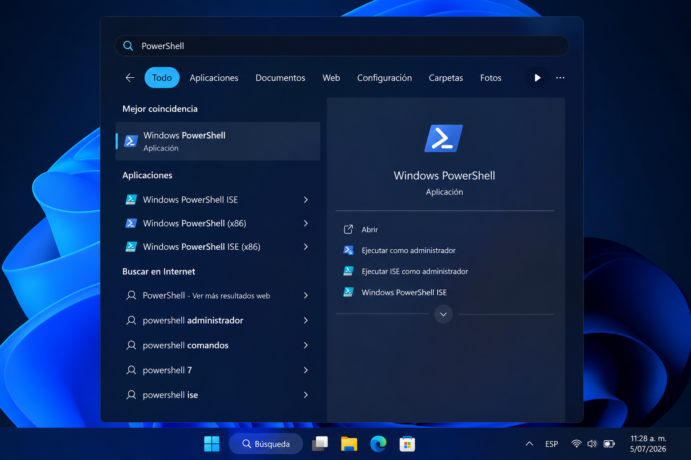
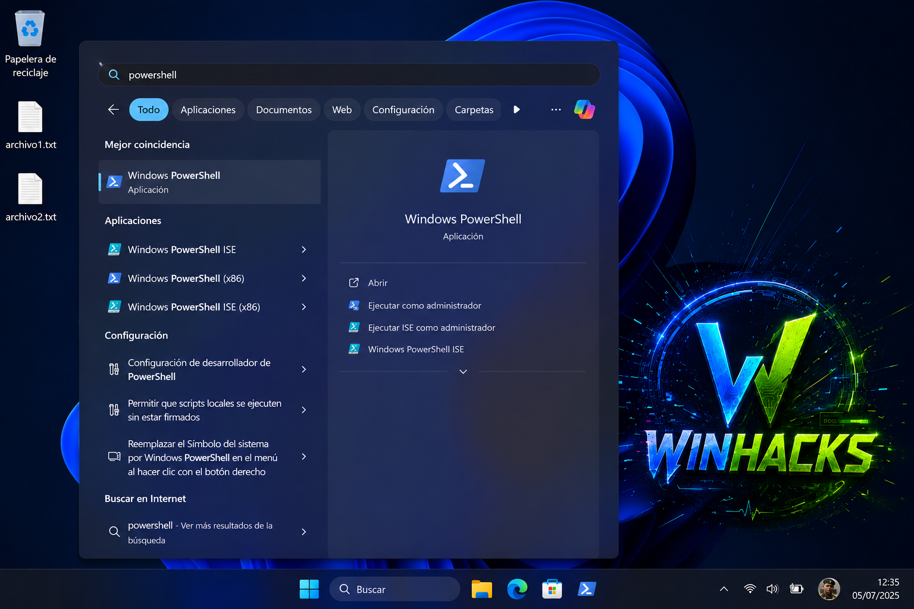
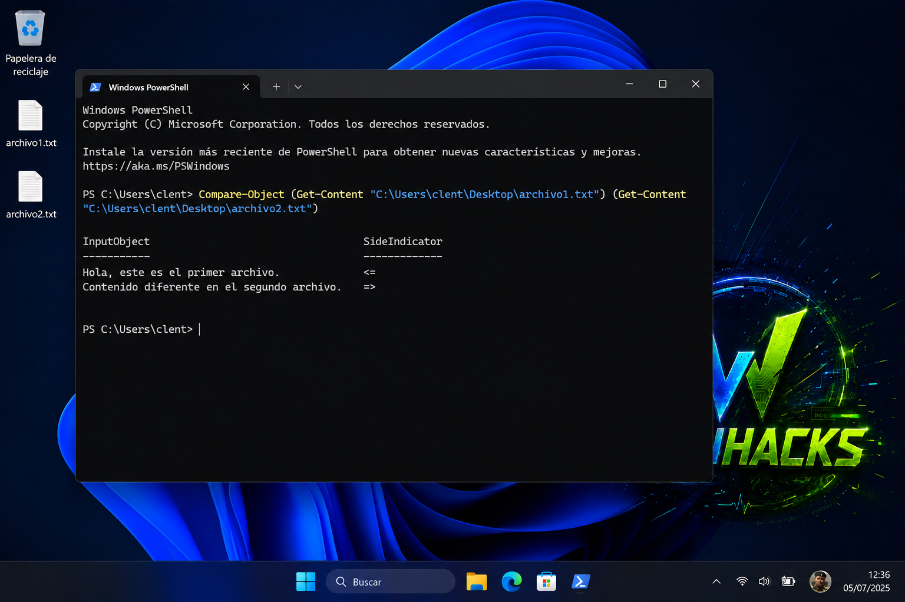
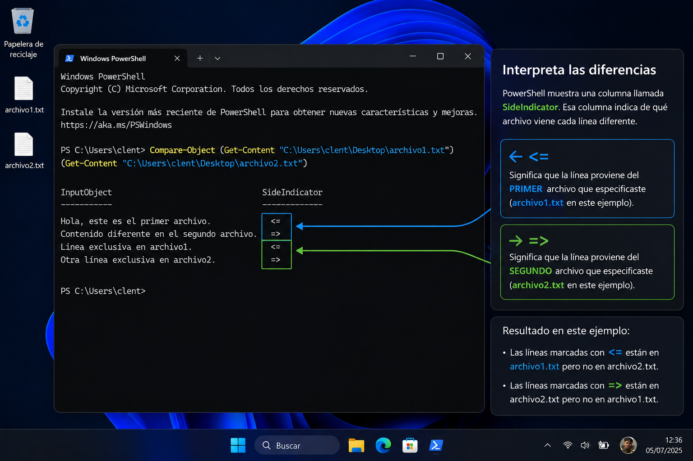
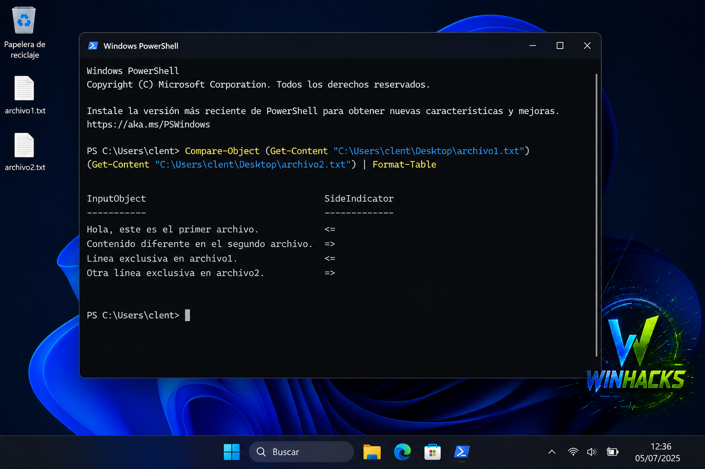

Video rápido
Mira cómo comparar archivos con PowerShell
En este Short te muestro cómo usar PowerShell para comparar dos archivos y ver qué líneas fueron agregadas, eliminadas o modificadas.
Qué aprenderás
- Cómo comparar dos archivos usando PowerShell.
- Qué hace Compare-Object.
- Cómo leer archivos con Get-Content.
- Cómo interpretar las diferencias que aparecen en pantalla.
¿Qué hace este comando?
Compare-Object compara dos conjuntos de datos. Cuando lo combinas con Get-Content, PowerShell lee dos archivos de texto y compara su contenido línea por línea.
Esto sirve para revisar configuraciones, scripts, listas, notas, logs, archivos de código o cualquier documento de texto plano donde necesites detectar diferencias rápidamente.
💡 Consejo WinHacks
Usa rutas con comillas cuando el archivo esté dentro de carpetas con espacios, como C:\Users\Clent\Desktop\archivo1.txt.
Corrección importante del comando
La ruta correcta en Windows usa barras invertidas \, no barras verticales. También debe haber un espacio entre Get-Content y la ruta del archivo.
Paso a paso
Prepara dos archivos de prueba
Crea dos archivos de texto en el escritorio. Por ejemplo: archivo1.txt y archivo2.txt.

Abre PowerShell
Presiona Win, busca PowerShell y abre la terminal. No necesitas ejecutarlo como administrador para comparar archivos normales.

Ejecuta el comando correcto
Copia este comando y ajusta las rutas si tus archivos están en otra ubicación:
Compare-Object (Get-Content "C:\Users\clent\Desktop\archivo1.txt") (Get-Content "C:\Users\clent\Desktop\archivo2.txt")

Interpreta las diferencias
PowerShell mostrará una columna llamada SideIndicator. Esa columna indica de qué archivo viene cada línea diferente.

Usa una versión más legible
Si quieres ver mejor el resultado, puedes agregar Format-Table:
Compare-Object (Get-Content "C:\Users\clent\Desktop\archivo1.txt") (Get-Content "C:\Users\clent\Desktop\archivo2.txt") | Format-Table

Qué significa SideIndicator
Indicador =>
Significa que esa línea aparece en el segundo archivo, pero no en el primero.
Indicador <=
Significa que esa línea aparece en el primer archivo, pero no en el segundo.
Sin salida en pantalla
Si PowerShell no muestra diferencias, normalmente significa que ambos archivos tienen el mismo contenido.
Ejemplo con rutas más simples
Si ya estás ubicado en el escritorio desde PowerShell, puedes usar una versión más corta:
Compare-Object (Get-Content ".\archivo1.txt") (Get-Content ".\archivo2.txt")
Para moverte al escritorio, puedes usar:
cd "$env:USERPROFILE\Desktop"
✅ Resultado esperado
PowerShell mostrará las líneas que son diferentes entre ambos archivos. Esto te permite saber qué se agregó, eliminó o cambió sin abrir programas externos.
Errores comunes
El comando dice que no encuentra el archivo
Revisa que la ruta esté bien escrita. En Windows debe verse así: C:\Users\clent\Desktop\archivo1.txt.
Usé barras verticales y falló
Las rutas de Windows no usan |. Usa barras invertidas: \.
No aparece ninguna diferencia
Eso puede significar que los archivos son iguales. Agrega una línea diferente en uno de ellos y vuelve a ejecutar el comando.
Preguntas frecuentes
¿Funciona en Windows 11?
Sí. También funciona en Windows 10 con PowerShell.
¿Sirve para archivos Word?
No es ideal para archivos .docx. Este método funciona mejor con archivos de texto, scripts, listas, configuraciones, logs y código.
¿Necesito instalar algo?
No. PowerShell ya viene integrado en Windows.
¿Puedo comparar scripts?
Sí. Puedes comparar archivos .ps1, .bat, .cmd, .txt, .csv y otros archivos de texto.
Recurso gratuito
Descarga comandos útiles para Windows
Aprende comandos CMD y PowerShell para comparar archivos, diagnosticar problemas, revisar red, procesos y herramientas ocultas del sistema.